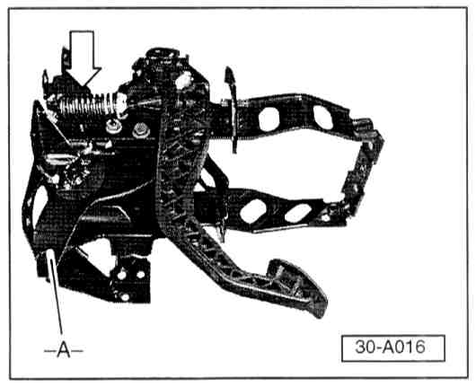
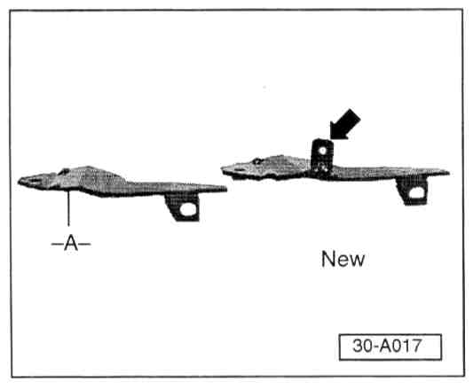

Clutch Pedal - Does Not Fully Return/Cruise Control Inop
Group: 30Number: 98-01
Date: Feb. 23, 1998
Subject:
Clutch Pedal Does Not Fully Return, Cruise Control Will Not Function
Model(s):
Golf, GTI, Jetta with 02A Transmission 1995 -->
Supersedes T.B. Group 30 Number 97-02 dated Oct. 31, 1997
Superseded due to pedal stop Part No. Change
Condition
Clutch pedal does not fully return to stop, cruise control (if equipped) will not function.
Service

May be caused by clutch pedal over center spring-arrow- dropping out of position.
If condition exists:
- Inspect clutch pedal assembly for missing spring.
If spring is missing:
- Locate and reinstall spring.

- Replace support -A- with new support Part No: 1HM 419 555D and install pedal stop Part No: 861 805 461 into support at -arrow-.
CAUTION!
Part numbers are for reference only. Always check with your Parts Dept. for the latest parts information.
When procedure applies to vehicles within The New Vehicle Limited Warranty and adheres to Warranty Policy guidelines, use the following:
Part Identifier: 3006
Labor Operation: 3006510 85 TU